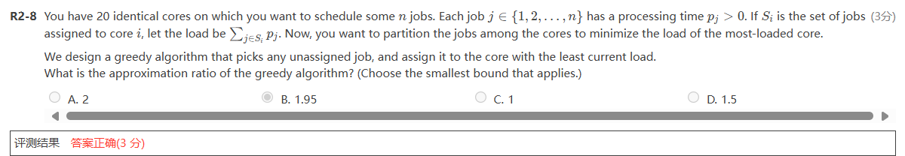

- skewed tree the binary tree in which each node has either one or no child is known as a skewed binary tree.
AVL Tree¶
1 Adelson-Velskii-Landis Trees¶
Definition: An empty binary tree is height balanced. If \(T\) is a nonempty binary tree with \(T_L\) and \(T_R\) as its left and right subtree, then T is height balanced iff - \(T_L\) and \(T_R\) are height balanced, and - \(|h_L-h_R|\le 1\) where \(h_L\) and \(h_R\) are the heights of \(T_L\) and \(T_R\), respectively
Definition: The balance factor BF(node)=\(h_L-h_R\). In an AVL tree, \(BF(node) = -1, 0, 1\)
trouble finder: the first node that signals the trouble(\(|BF|(node) > 1\))
2 single rotation¶
LL rotation左子树顺时针旋转，RR rotation右子树逆时针旋转？
 - If B has a left tree before rotation, we should make it the right subtree of A
- A is not expected to be the root of the whole tree, it can be the root of any subtree
- If B has a left tree before rotation, we should make it the right subtree of A
- A is not expected to be the root of the whole tree, it can be the root of any subtree
3 double rotation¶
It can be considered as the combination of two single rotations
LR rotation

4 The height of AVL tree¶
Let \(n_h\) be the minimum number of the nodes in a height balanced tree of height \(h\). \(\(n_h = n_{h-1} + n_{h-2}+1\)\) so \(n_h=F_{h+2}-1 \approx \frac 1{\sqrt 5}({\frac{1+\sqrt 5}2})^{h+2}-1\)
Splay Trees¶
target: Any M consecutive tree operations starting from an empty tree take at most \(O(MlogN)\)time
AVL tree is bound to be Splay tree
In splay tree, the amortized time is \(O(logN)\)摊还时间
不能让最坏的情况持续发生，如果某一节点是某一操作的最坏情况，那么下次它就得是最好的情况
Idea: After a node is accessed, it is pushed to the root by a series of AVL tree rotations
1 Splay操作¶
每访问一个节点x后都要强制将其旋转到根节点 - zig:在\(p\)是根节点时操作，Splay 树会根据 !\(x\) 和 \(z\)间的边旋转。\(zig\)存在是用于处理奇偶校验文体，仅当\(x\)在splay操作开始时具有奇数深度时作为splay操作的最后一步执行 ⚠️upload failed, check dev console
- zig-zig：同侧
- zig-zag：锯齿状
analysis methods¶
1 Aggregate analysis¶
总量分析
2 Accounting method¶
Theorem The amortized time to splay a tree with root T at node X is at most \(3(R(T)-R(X))+1=O(logN)\) \(R(T)=\sum logS(i) (i\in T)\)
Red-Black Trees¶

NULL is equal to NIL, which is considered an external node with the color black
在红黑树中把每一个空节点看作一个leaf node
internal nodes: 除空节点外的所有节点
Summary 1¶
compare AVL trees with Red-Black Trees
 如果查询更多，AVL tree 快一点
如果插入和删除更多，红黑树快一点
如果查询更多，AVL tree 快一点
如果插入和删除更多，红黑树快一点
B+ Trees¶
B树是搜索树但不是二叉树 Definition ： A B+ tree of order M is a tree with the following structural properties: - 根节点是叶子节点或者有2~M个子节点
1 Insertion¶
2 Analysis¶
Inverted File Index¶
index用来存储给定单词在文章中的未知
Inverted file 存储指向出现的单词的指针
 不仅包括在哪篇文章，还包括在文章中的那个位置
不仅包括在哪篇文章，还包括在文章中的那个位置
查找一句话时从频率最低的单词开始
1 Index Generator¶

1.1 Token Analyzer & Stop Filter¶
1.1.1 Word Stemming词干提取¶
1.1.2 Stop Words¶
一些在文章中经常出现的单词，不用去index，在处理之前要先删除掉
1.2 Vocabulary Scanner¶

1.3 Memory Management¶

2 Distributed indexing¶
Each node contains index of a subset of collection

3 Dynamic indexing¶

4 Compression¶
5 Thredholding¶
阈值
只解决一部分问题
- Document：只接受权值最高的x个文件
- Query
6 Measures for a search engine¶
- index的速度
- search的速度
- expressiveness of query language
- 表达复杂信息的能力
- 处理复杂
- query的速度
- data 检索能力评估
- information 检索信息能力
6.1 measure the relevancy¶
- A benchmark document collection
- A benchmark suite of queries
- A binary assessment of either relevant or irrelevant for each query-doc pair
 How to improve the relevancy of search results
1
How to improve the relevancy of search results
1
Leftist Heaps and Skew Heaps¶
1 Leftist Heaps¶
在线性时间内优化合并 普通堆的合并，\(\Theta(N)\) Leftist Heap: - Order Property - the same - Structure Property - binary tree, but unbalanced null path length: 任何节点的\(Npl(X)\)是从X到任意一个没有两个子节点的节点的最短路径，Npl(NULL)=-1 从底至上计算 $$Npl(X)=min{Npl(C)+1~for~all~C~as~children~of~X} $$
Skew Heap¶
想要左偏堆改变能够进行自下而上维护，就要改变甚至放弃它的左偏的性质的严格性
skew heap 的合并与左偏堆的合并十分类似，知识此时无条件地交换左右子树，不论左偏性质如何变化，我们都会
Binomial Queue¶
1 概念¶
二项队列本质上是一系列二项树的集合。
二项树 二项树满足堆的性质，即parent节点的值小于（大于）child的值
2 操作¶
2.1 合并¶
二项队列的合并可以看作两个二进制数的相加
2.2 单点插入¶
视为合并只有一个节点
2.3 查询队首¶
二项队列的队首就是整个队列的最小值（最大值），是这若干个（\(O(logN)\)个）二项树的根中最小（最大）的那个，所以其时间复杂度为\(O(logN)\)
2.4 队首出队¶
队首出队首先要找到队首，这件事我们在#查询队首已经讨论过了。
找到队首后，我们将其从二项队列中移除，我们知道，队首必然是某个二项树的根，所以删掉这个队首以后，就会产生 kk 个新的子树。
而让我们回顾二项树的合并过程，可以发现，根的所有儿子都是一个完整的 kk 阶二项树合并过来的，所以当我们删掉这个根，产生的所有子树都是二项树。
因此我们联想到，将队首出队问题转化为合并二项队列的问题——假设 T的队首是 Bk的根，则队首出队可以转化为求解 merge(T−Bk,Bk.root.children)的问题。
 \(\(\rho = \frac{2m-1}{m}\)\)
{kind=link}